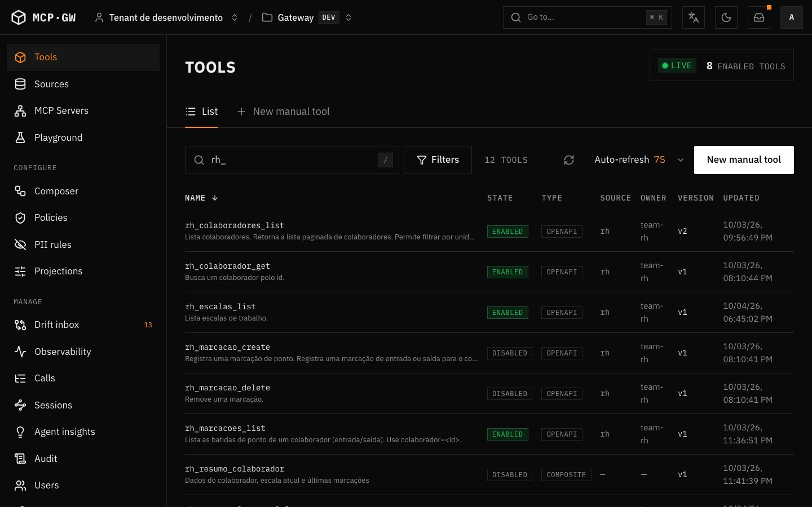
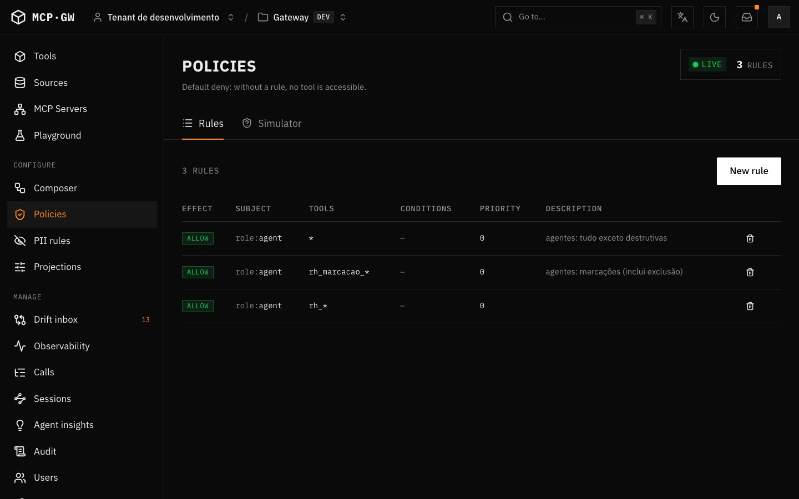
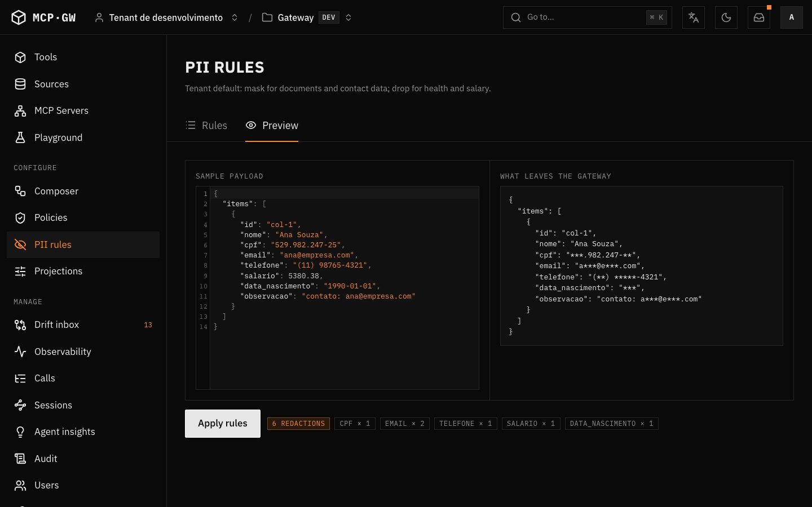
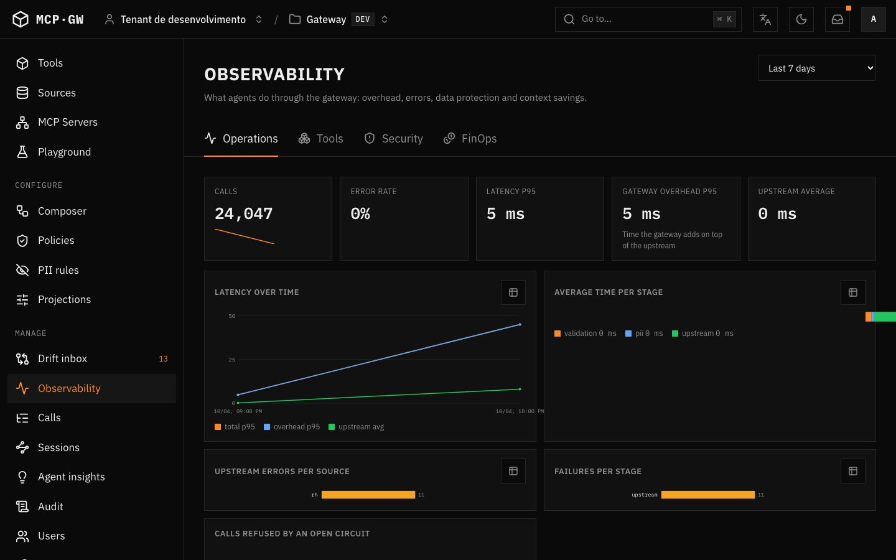

Suas APIs REST como
ferramentas MCP governadas.
Do Claude a um assistente de voz num ESP32-S3: os mesmos agentes, as mesmas regras e nenhuma mudança na API.
O que vamos ver
Por que agentes não devem falar direto com suas APIs. MCP em 1 slide.
Pipeline, governança, contexto e observabilidade.
Claude Code conectado ao gateway, ao vivo.
Assistente de voz consultando a API de RH pelo gateway.
Como começar e perguntas.
Em laranja: demos ao vivo, metade do tempo do workshop.
Agentes não deveriam falar com suas APIs sem supervisão.
✕ Agente → API direto
- Credenciais no prompt, no config do cliente ou no histórico do chat.
- CPF, salário e e-mail vão inteiros para o contexto do modelo.
- Respostas enormes estouram o contexto e o custo.
- Ninguém sabe quem chamou o quê, quando e por quê.
- Toda API precisa ser reescrita como servidor MCP.
✓ Agente → gateway → API
- Credenciais ficam num cofre e são injetadas por chamada.
- PII sai mascarada antes de chegar ao modelo.
- A resposta é recortada para caber no contexto.
- Cada chamada gera um evento de auditoria.
- A API continua exatamente igual.
Model Context Protocol: o "USB-C" dos agentes.
Funções que o modelo pode chamar, com JSON Schema de entrada e saída. Ex.: rh_colaborador_get.
Conteúdo que o host lê sob demanda. O gateway usa para artifact:// (respostas grandes) e ui:// (interfaces).
Streamable HTTP, com o token no header Authorization. Specs 2025-11-25 e 2026-07-28.
MCP Gateway
Aponte para um OpenAPI, Postman, HAR ou cURL e o gateway gera as tools. O dono revisa e habilita, e as políticas decidem quem chama o quê.
Default deny
Toda tool nasce disabled. Sem policy, ninguém chama.
Downstream intocado
A API REST não muda nada: nem código, nem deploy.
Credencial invisível
O agente usa um token do gateway; o segredo da API fica no cofre.
PII mascarada
CPF, CNPJ, PIS, e-mail e telefone saem mascarados, com hash ou tokenizados.
Contexto é escasso
Projeção, limites e artifacts deixam a resposta enxuta.
Tudo auditável
Um evento por chamada alimenta auditoria, métricas e traces.
Toda chamada passa pelo mesmo pipeline.
O pipeline completo adiciona +4,55 ms no p95, a 200 rps numa única instância e com 0 erros (k6, docs/perf).
Da API à tool em 5 passos.
- Importar: OpenAPI 3.x, Swagger 2.0, Postman, HAR ou cURL, com preview antes de salvar.
- Crawler: um worker gera uma tool por operação, e re-crawls detectam drift.
- Revisar: a tool nasce
disabled; o owner confere schema e anotações. - Policy: quem pode chamar, por papel, grupo, usuário ou cliente.
- Publicar: num servidor virtual
/mcp/s/:slugcom catálogo próprio.

Quem pode chamar o quê, e o que pode sair.

- Explicit deny vence allow.
- Tools
destructiveHintsó com allow explícito;*não cobre. - Rate limit por cliente, no Redis.

- Detectores: CPF, CNPJ, PIS, CEP, e-mail, telefone, cartão e IBAN.
- Regras por campo, como saúde e salário.
- Índice de titular para pedidos LGPD.
Três jeitos de expor o catálogo.
Catálogo nativo
Todas as tools permitidas viram tools MCP. Ideal para catálogos pequenos.
Descoberta sob demanda
search_tools → get_tool_schema → call_tool. Usa ~4% dos tokens de definição de tools.
Servidor virtual
Catálogo curado e instruções próprias por caso de uso. É o que o ESP32 vai usar.
JSONPath para incluir ou excluir campos e limitar arrays e bytes. O agente também pode pedir só o que quer com _fields.
Respostas grandes viram artifact://, lidas em partes com artifact_read e artifact_query.
Um evento por chamada. Tudo deriva dele.

- CallEvent: tool, cliente, decisão de policy, latência e resultado, sem payload.
- Alimenta auditoria, Prometheus, traces OpenTelemetry (com
traceparentdo agente) e dashboard Grafana. - Explorador de chamadas e trajetórias de sessão.
/mcp/observability: o próprio agente pergunta "quais tools mais falharam hoje?".
Claude conectado ao gateway.
$ claude mcp add --transport http mcp-gateway \ http://localhost:4000/mcp/omni \ --header "Authorization: Bearer mgw_…"ou · .mcp.json (gerado pela Admin UI)
{ "mcpServers": { "rh-gestor": {
"type": "http",
"url": "https://mcp.empresa.com/mcp/s/rh-gestor",
"headers": { "Authorization":
"Bearer ${MCP_GATEWAY_TOKEN}" } } } }
"Quais são os dados do colaborador col-00001 e qual a escala dele esta semana?"
- Claude busca a tool com
search_toolse chamarh_colaborador_get. - O CPF chega mascarado; a credencial da API nunca aparece.
- Pedir para apagar uma marcação resulta em negado (
destructiveHint). - Em hosts com MCP Apps, o resultado aparece como tabela ou card (UI generativa).
Um assistente de voz na palma da mão.
na unidade Centro.
| Placa | Waveshare ESP32-S3-Touch-AMOLED-1.75C |
| SoC | ESP32-S3R8 · dual-core Xtensa LX7 a 240 MHz · 8 MB PSRAM |
| Tela | AMOLED redonda de 1.75", 466×466, touch capacitivo |
| Áudio | 2 microfones com cancelamento de eco · alto-falante |
| Rede | Wi-Fi 2.4 GHz · Bluetooth 5 LE |
| Firmware | xiaozhi-esp32 (ESP-IDF 5.5), um agente de voz com MCP |
Da voz à API, passando pelo gateway.
Bearer mgw_…
assistente-voz
+ credencial
Saída apenas. O pipe abre a conexão; nenhuma porta é aberta no firewall.
PII antes da voz. O CPF é mascarado antes de chegar ao LLM e ao TTS.
Cliente próprio. Token esp32-sala com policy e rate limit dedicados.
Nenhuma linha de código no firmware.
{ "mcpServers": {
"mcp-gateway": {
"type": "http",
"url": "http://localhost:4000/mcp/s/assistente-voz",
"headers": {
"Authorization": "Bearer mgw_…"
} } } }
Terminal · o endpoint vem do console xiaozhi.me
$ export MCP_ENDPOINT='wss://api.xiaozhi.me/mcp/?token=…' $ python mcp_pipe.py # sobe todos do mcp_config.json
Só 2 tools de leitura: rh_colaborador_get e rh_escalas_list, com instruções curtas e próprias para voz.
O nome do token vira o clientId, que aparece nas policies, no rate limit e na auditoria.
client esp32-sala → allow nas 2 tools; o resto continua em default deny.
Mesmas tools, dois agentes, uma governança.
| Claude Code | ESP32-S3 · xiaozhi | |
|---|---|---|
| Interface | Texto, no terminal | Voz, numa tela redonda |
| Transporte | Streamable HTTP direto | WebSocket → mcp_pipe → Streamable HTTP |
| Endpoint | /mcp/omni, com o catálogo inteiro via busca | /mcp/s/assistente-voz, com 2 tools curadas |
| Cliente | token agent-dev | token esp32-sala |
| Policy | Default deny · destrutivas exigem allow explícito · rate limit por cliente | |
| PII | CPF e e-mail mascarados antes de chegar ao modelo | |
| Credencial | No cofre do gateway; nenhum dos dois agentes a vê | |
| Auditoria | O mesmo explorador de chamadas, filtrado por clientId | |
Do clone ao primeiro agente em minutos.
$ git clone github.com/leandro-jm/mcp-gateway $ pnpm install $ pnpm dev:infra # Postgres, Redis, MinIO $ pnpm db:migrate && pnpm db:seed $ pnpm dev # gateway :4000 $ pnpm dev:upstream # API de RH fake :4010 $ pnpm --filter @mcp-gateway/crawler dev $ pnpm --filter @mcp-gateway/admin-ui dev # :5180
Imagens leandrojm/mcp-gateway, -crawler e -admin-ui com docker-compose.prod.yml. Guia em docs/deploy.md.
Claude Code, SDKs e cURL em docs/integrations/.
Firmware xiaozhi-esp32 + mcp_pipe.py (repositório 78/mcp-calculator).
Perguntas?
O agente muda. A governança não.